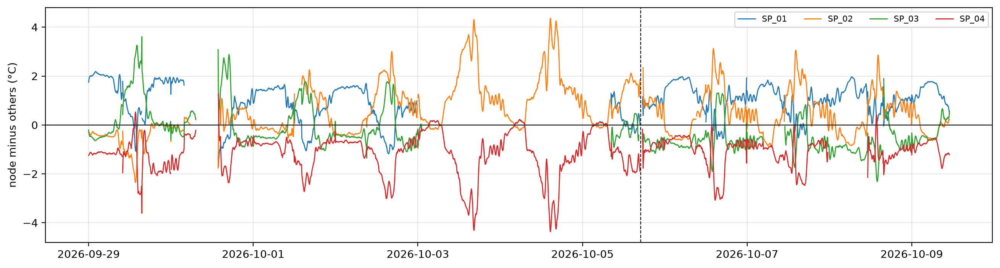
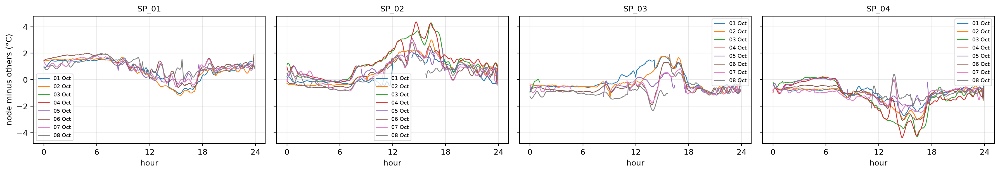
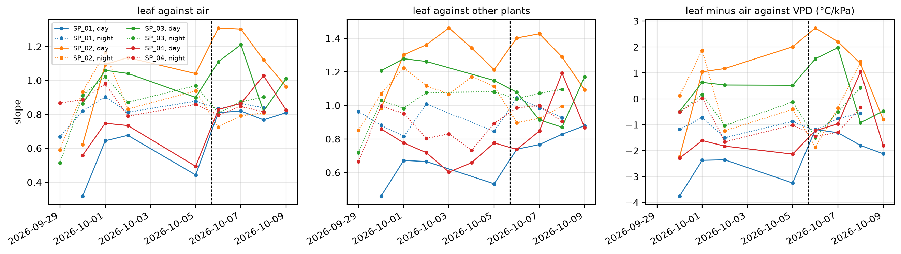
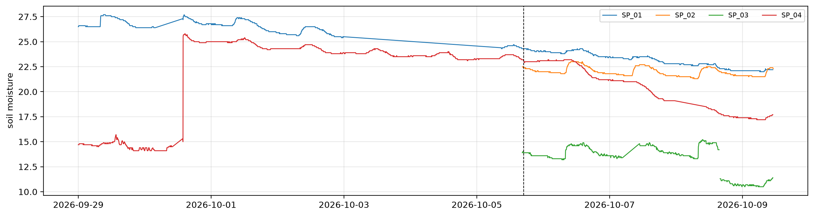

import numpy as np, pandas as pd, matplotlib.pyplot as plt
from pathlib import Path
from speaking_plants.clean import *
from speaking_plants.leaf import *
from speaking_plants.logbook import *Batch 2: water stress diagnosis
Which plant was water stressed after 5 October? A blind diagnosis from the logs
Batch 2 is the SD-card dump collected on 9 October. It contains all of batch 1, from 23 September, plus the period from 5 October at about 17:00 to 9 October at 11:00. In that new period, the team water-stressed one of the four plants without saying which. This notebook tries to find it from the data. Batch 1 days serve as each plant’s baseline.
The thermal signals use the unmasked leaf temperature. The variance masks are not reliable yet. 9 October has data only until 11:00, so daily statistics stop at 8 October.
mdf = share_ruuvi(measurements(clean(read_logs(sorted(Path('../../../data/b02').glob('dados_*.csv'))))))
us = leaf_series(mdf, no_masks(full_days(mdf, min_n=13)))
start_new = pd.Timestamp('2026-10-05 17:00')Leaf temperature relative to the other plants
All plants share the greenhouse climate. peers gives the mean of the other three plants. Subtracting it from each plant’s smoothed leaf temperature removes the shared climate, and needs no air sensor. A plant that transpires less warms relative to the others, most at midday and in the afternoon. The dashed line marks the start of the new period:
tl = node_table(us, 't_smooth')
rel = tl - peers(tl)
r = rel.loc['2026-09-29':]
fig, ax = plt.subplots(figsize=(16, 4))
for n in r: ax.plot(r.index, r[n], lw=1, label=n)
ax.axhline(0, c='k', lw=0.8); ax.axvline(start_new, c='k', ls='--', lw=0.8)
ax.set_ylabel('node minus others (°C)'); ax.grid(alpha=0.3); ax.legend(fontsize=8, ncol=4)
The same difference by time of day, one line per day from 1 October, when the camera scenes had settled after the change on 30 September:
long = rel.loc['2026-10-01':'2026-10-08'].stack().rename('rel').reset_index().rename(columns={'t': 'time'})
long = long.assign(day=long.time.dt.normalize(), hour=(long.time - long.time.dt.normalize()).dt.total_seconds() / 3600)
plot_panels(long, 'rel', ylabel='node minus others (°C)')
Daily indicators
Four numbers per plant and day:
- midday leaf minus air, from 11:00 to 15:00, on the days with Ruuvi readings,
- midday leaf temperature minus the mean of the other plants,
- the daily swing of the smoothed leaf temperature, with the air’s swing for reference,
- afternoon (13:00 to 16:00) minus morning (09:00 to 12:00) of the difference to the other plants. Stomata that close as the day goes on make this rise.
air = node_table(us, 't_air').mean(axis=1)
h, day = tl.index.hour, tl.index.normalize()
span = (day >= '2026-09-29') & (day < '2026-10-09')
mid, am, pm = (h >= 11) & (h < 15), (h >= 9) & (h < 12), (h >= 13) & (h < 16)
daily = lambda w: w.groupby(lambda t: t.normalize()).mean().rename(index=lambda d: f'{d:%d %b}').round(2)
swing = lambda s: s.max() - s.min() if s.notna().sum() > 250 else np.nan
ind = {'midday leaf - air': daily(tl.sub(air, axis=0)[mid & span]),
'midday node - others': daily(rel[mid & span]),
'daily swing': tl[span].groupby(lambda t: t.normalize()).agg(swing).assign(air=air[span].groupby(lambda t: t.normalize()).agg(swing)).rename(index=lambda d: f'{d:%d %b}').round(1),
'afternoon - morning': (daily(rel[pm & span]) - daily(rel[am & span])).round(2)}
pd.concat(ind, axis=1)| midday leaf - air | midday node - others | daily swing | afternoon - morning | ||||||||||||||
|---|---|---|---|---|---|---|---|---|---|---|---|---|---|---|---|---|---|
| node_id | SP_01 | SP_02 | SP_03 | SP_04 | SP_01 | SP_02 | SP_03 | SP_04 | SP_01 | SP_02 | SP_03 | SP_04 | air | SP_01 | SP_02 | SP_03 | SP_04 |
| t | |||||||||||||||||
| 29 Sep | 0.98 | -0.16 | 2.46 | 0.12 | 0.18 | -1.35 | 2.15 | -0.97 | 8.1 | 8.8 | 11.5 | 10.1 | 9.8 | -1.04 | -0.10 | 1.50 | -0.38 |
| 30 Sep | -1.69 | -0.55 | 0.16 | -1.64 | -1.09 | 0.43 | 1.40 | -0.79 | NaN | NaN | NaN | NaN | NaN | NaN | NaN | NaN | NaN |
| 01 Oct | 0.11 | 0.65 | 0.66 | -1.15 | 0.21 | 0.77 | 0.99 | -1.57 | 7.1 | 10.1 | 10.2 | 7.6 | 8.5 | -1.37 | 1.92 | 1.29 | -1.20 |
| 02 Oct | 0.06 | 1.53 | 0.41 | -1.26 | -0.16 | 1.79 | 0.30 | -1.93 | 7.3 | 10.8 | 10.5 | 7.5 | 8.4 | -1.51 | 1.44 | 1.49 | -1.38 |
| 03 Oct | NaN | NaN | NaN | NaN | NaN | 2.79 | NaN | -2.79 | NaN | 10.7 | NaN | 7.4 | NaN | NaN | 1.76 | NaN | -1.76 |
| 04 Oct | NaN | NaN | NaN | NaN | NaN | 2.62 | NaN | -2.62 | NaN | 11.9 | NaN | 9.7 | NaN | NaN | 1.55 | NaN | -1.55 |
| 05 Oct | 0.88 | 2.09 | 0.74 | -0.36 | 0.06 | 1.67 | -0.13 | -1.60 | NaN | 9.4 | NaN | 6.7 | NaN | -0.85 | 0.98 | 0.46 | -0.60 |
| 06 Oct | 1.46 | 2.30 | 0.52 | -0.16 | 0.57 | 1.70 | -0.67 | -1.58 | 8.3 | 11.6 | 9.8 | 9.2 | 8.6 | -0.73 | 1.29 | 0.43 | -1.01 |
| 07 Oct | 1.20 | 2.20 | 0.41 | -0.21 | 0.40 | 1.74 | -0.66 | -1.48 | 8.4 | 10.4 | NaN | 9.5 | 8.6 | -0.73 | 1.42 | -0.02 | -0.38 |
| 08 Oct | 0.95 | 1.70 | -0.28 | -0.17 | 0.54 | 1.54 | -1.10 | -1.01 | 8.7 | 11.3 | 8.3 | NaN | 8.9 | -0.60 | 1.39 | -0.05 | -0.04 |
Daily fits
daily_fits fits each plant’s smoothed leaf temperature against a reference, separately for each day and for each night. Three references:
- air temperature: a well-transpiring leaf warms more slowly than the air by day, with a slope below 1,
- the mean of the other plants, from
peers: a plant that closes its stomata warms faster than the others, and its slope rises, - VPD, for leaf minus air: a transpiring leaf cools further below the air as VPD rises, which gives a negative slope. The slope moves towards 0, or above, when transpiration stops.
The fits start on 30 September, after the scene change. On 7 October SP_03 and on 8 October SP_04 restarted in the morning, so those day fits cover only the afternoon:
w = tl.loc['2026-09-30':]
vp = node_table(us, 'vpd').mean(axis=1)
fits = {'leaf against air': daily_fits(w, air), 'leaf against other plants': daily_fits(w, peers(w)),
'leaf minus air against VPD (°C/kPa)': daily_fits(node_table(us, 'dt_smooth').loc['2026-09-30':], vp)}
fig, axs = plt.subplots(1, 3, figsize=(16, 4), sharex=True)
for ax, (k, f) in zip(axs, fits.items()):
for (n, reg), g in f.groupby(['node_id', 'regime']):
ax.plot(g.day, g.slope, marker='o', ms=3, lw=1, ls='-' if reg == 'day' else ':', c=f'C{int(n[-1]) - 1}', label=f'{n}, {reg}')
ax.axvline(start_new, c='k', ls='--', lw=0.8); ax.set_title(k, fontsize=10); ax.grid(alpha=0.3)
axs[0].set_ylabel('slope'); axs[0].legend(fontsize=7, ncol=2); fig.autofmt_xdate()
The day slopes as a table:
pd.concat({k: f[f.regime == 'day'].pivot(index='day', columns='node_id', values='slope') for k, f in fits.items()}, axis=1).rename(index=lambda d: f'{d:%d %b}').round(2)Pandas4Warning: Sorting by default when concatenating all DatetimeIndex is deprecated. In the future, pandas will respect the default of `sort=False`. Specify `sort=True` or `sort=False` to silence this message. If you see this warnings when not directly calling concat, report a bug to pandas.
pd.concat({k: f[f.regime == 'day'].pivot(index='day', columns='node_id', values='slope') for k, f in fits.items()}, axis=1).rename(index=lambda d: f'{d:%d %b}').round(2)| leaf against air | leaf against other plants | leaf minus air against VPD (°C/kPa) | ||||||||||
|---|---|---|---|---|---|---|---|---|---|---|---|---|
| node_id | SP_01 | SP_02 | SP_03 | SP_04 | SP_01 | SP_02 | SP_03 | SP_04 | SP_01 | SP_02 | SP_03 | SP_04 |
| day | ||||||||||||
| 30 Sep | 0.32 | 0.62 | 0.86 | 0.56 | 0.46 | 0.98 | 1.21 | 0.86 | -3.76 | -2.24 | -0.48 | -2.29 |
| 01 Oct | 0.64 | 1.09 | 1.06 | 0.75 | 0.67 | 1.30 | 1.28 | 0.78 | -2.37 | 1.04 | 0.63 | -1.61 |
| 02 Oct | 0.68 | 1.13 | 1.04 | 0.73 | 0.67 | 1.36 | 1.26 | 0.72 | -2.36 | 1.17 | 0.53 | -1.83 |
| 03 Oct | NaN | NaN | NaN | NaN | NaN | 1.46 | NaN | 0.60 | NaN | NaN | NaN | NaN |
| 04 Oct | NaN | NaN | NaN | NaN | NaN | 1.34 | NaN | 0.66 | NaN | NaN | NaN | NaN |
| 05 Oct | 0.44 | 1.04 | 0.90 | 0.49 | 0.53 | 1.21 | 1.15 | 0.78 | -3.25 | 2.01 | 0.52 | -2.13 |
| 06 Oct | 0.81 | 1.31 | 1.11 | 0.83 | 0.74 | 1.40 | 1.08 | 0.74 | -1.18 | 2.73 | 1.54 | -1.23 |
| 07 Oct | 0.82 | 1.30 | 1.21 | 0.86 | 0.77 | 1.43 | 0.91 | 0.85 | -1.31 | 2.20 | 1.97 | -0.97 |
| 08 Oct | 0.77 | 1.12 | 0.82 | 1.03 | 0.83 | 1.29 | 0.87 | 1.19 | -1.80 | 1.36 | -0.92 | 1.04 |
| 09 Oct | 0.81 | 0.96 | 1.01 | 0.83 | 0.88 | 1.09 | 1.17 | 0.87 | -2.12 | -0.79 | -0.47 | -1.80 |
Soil moisture
Soil moisture is the closest thing to an answer key, so it comes last. All four soil sensors work in the new period. Their readings are not calibrated against each other, so the trend of each sensor matters more than its level:
s = mdf[mdf.time >= '2026-09-29']
fig, ax = plt.subplots(figsize=(16, 4))
for n, g in s.groupby('node_id'): ax.plot(g.time, g.soil_moisture, lw=1, label=n)
ax.axvline(start_new, c='k', ls='--', lw=0.8); ax.set_ylabel('soil moisture'); ax.grid(alpha=0.3); ax.legend(fontsize=8, ncol=4)
A plant draws water from the soil by day and almost none at night. The change in soil moisture from sunrise to sunset, and from sunset to the next sunrise, measures that uptake. Each value is the median of the half hour that contains the sun event:
st = sun_times(pd.date_range('2026-09-29', '2026-10-09'))
sm = mdf.set_index('time').groupby('node_id').soil_moisture.resample('30min').median().unstack(0)
at = lambda t: sm.reindex(t.dt.floor('30min').to_numpy()).set_axis(t.index)
rise, sset = at(st.sunrise), at(st.sunset)
uptake = pd.concat({'sunrise to sunset': sset - rise, 'sunset to next sunrise': rise.shift(-1) - sset}, axis=1).iloc[:-1]
uptake.rename(index=lambda d: f'{d:%d %b}').round(2)| sunrise to sunset | sunset to next sunrise | |||||||
|---|---|---|---|---|---|---|---|---|
| node_id | SP_01 | SP_02 | SP_03 | SP_04 | SP_01 | SP_02 | SP_03 | SP_04 |
| day | ||||||||
| 29 Sep | 0.10 | NaN | NaN | -0.2 | NaN | NaN | NaN | -0.3 |
| 30 Sep | NaN | NaN | NaN | 10.9 | -0.30 | NaN | NaN | -0.1 |
| 01 Oct | -0.30 | NaN | NaN | -0.6 | -0.60 | NaN | NaN | 0.0 |
| 02 Oct | 0.05 | NaN | NaN | -0.4 | NaN | NaN | NaN | -0.1 |
| 03 Oct | NaN | NaN | NaN | -0.3 | NaN | NaN | NaN | 0.0 |
| 04 Oct | NaN | NaN | NaN | -0.3 | NaN | NaN | NaN | 0.1 |
| 05 Oct | NaN | NaN | NaN | -0.3 | -0.45 | -0.5 | -0.7 | 0.1 |
| 06 Oct | -0.15 | 0.3 | 0.7 | -1.7 | -0.45 | -0.5 | NaN | -0.4 |
| 07 Oct | -0.20 | 0.2 | NaN | -1.7 | -0.40 | -0.5 | -0.7 | NaN |
| 08 Oct | -0.40 | 0.6 | -2.2 | NaN | -0.20 | -0.4 | -0.6 | -0.4 |
SP_02 and SP_03 gain moisture by day. The rise happens between about 08:00 and 09:00, and stops while the soil temperature keeps rising until noon. It is a step, most likely a morning watering, not a temperature effect on the sensor. The change from 06:30 to 09:30 measures it:
mean_at = lambda a, b: sm.between_time(a, b).groupby(lambda t: t.normalize()).mean()
step = mean_at('09:30', '09:59') - mean_at('06:30', '06:59')
step.loc['2026-09-29':].rename(index=lambda d: f'{d:%d %b}').round(2)| node_id | SP_01 | SP_02 | SP_03 | SP_04 |
|---|---|---|---|---|
| time | ||||
| 29 Sep | 1.2 | NaN | NaN | 0.2 |
| 30 Sep | NaN | NaN | NaN | 0.4 |
| 01 Oct | 0.8 | NaN | NaN | 0.3 |
| 02 Oct | 0.7 | NaN | NaN | 0.3 |
| 03 Oct | NaN | NaN | NaN | 0.3 |
| 04 Oct | NaN | NaN | NaN | 0.3 |
| 05 Oct | NaN | NaN | NaN | 0.3 |
| 06 Oct | 0.3 | 1.1 | 1.45 | 0.1 |
| 07 Oct | 0.2 | 1.0 | NaN | 0.0 |
| 08 Oct | 0.2 | 1.0 | 1.90 | NaN |
| 09 Oct | 0.2 | 0.8 | 0.60 | 0.3 |
Logbook check
Scene changes in the new period would confound the thermal signals:
check_logbook(mdf, read_deployments('../../../logbook/deployments.csv'))| check | node_id | detail | |
|---|---|---|---|
| 0 | scene change | SP_01 | 25 Sep to 28 Sep: r = 0.38, inside d01 |
| 1 | scene change | SP_01 | 29 Sep to 30 Sep: r = 0.22, inside d01 |
| 2 | scene change | SP_01 | 02 Oct to 05 Oct: r = 0.09, inside d01 |
| 3 | scene change | SP_02 | 23 Sep to 24 Sep: r = -0.02, inside d02 |
| 4 | scene change | SP_02 | 29 Sep to 30 Sep: r = 0.45, inside d02 |
| 5 | scene change | SP_02 | 30 Sep to 01 Oct: r = 0.38, inside d02 |
| 6 | scene change | SP_03 | 24 Sep to 26 Sep: r = -0.00, inside d03 |
| 7 | scene change | SP_03 | 26 Sep to 29 Sep: r = 0.28, inside d03 |
| 8 | scene change | SP_03 | 29 Sep to 30 Sep: r = 0.19, inside d03 |
| 9 | scene change | SP_04 | 29 Sep to 30 Sep: r = 0.03, inside d04 |
Diagnosis
SP_04 is the most likely stressed plant. The thermal signals agree:
- Its midday leaf minus air rose from about -1.2 °C on 1 and 2 October to about -0.2 °C on 6 to 8 October.
- Its midday difference to the other plants rose from about -1.9 °C on 2 October to -1.0 °C on 8 October.
- Its daily swing grew from 7.4 to 7.6 °C on 1 to 3 October to 9.2 to 9.5 °C on 6 and 7 October, while the air’s swing stayed at 8.4 to 8.6 °C.
- Its afternoon warming relative to the morning was -1.2 to -1.8 °C on 1 to 4 October. It rose from 6 October onwards, to -1.0, -0.4 and 0.0 °C on 6, 7 and 8 October.
- Its leaf minus air cooled by 1.6 to 1.8 °C per kPa of VPD on 1 and 2 October. That fell to 1.2 and 1.0 °C per kPa on 6 and 7 October, and on 8 October its leaves warmed by 1.0 °C per kPa instead.
- Its day slope against the other plants was 0.60 to 0.78 from 1 to 6 October. It rose to 0.85 on 7 October and 1.19 on 8 October.
The 8 October fits for SP_04 cover only the afternoon, after the restart at 10:46. The day slopes against air rose for all four plants on 6 and 7 October, which points to a shared cause such as the weather. Midday VPD stayed between 1.6 and 1.8 kPa.
The soil agrees. Up to 5 October, SP_04 gained about 0.3 every morning between 06:30 and 09:30. That step was 0.1 and 0.0 on 6 and 7 October, and back at 0.3 on 9 October. Its soil lost 1.7 between sunrise and sunset on 6 and 7 October, against 0.3 to 0.6 before. Its moisture fell from 23.3 on 5 October to 17.3 on 9 October. This looks like watering stopped after 5 October and restarted on the morning of 9 October.
SP_01 also warmed relative to air, by about 1 °C, but its camera scene changed between 2 and 5 October, which makes its baseline unreliable. Its response to VPD weakened on 6 and 7 October and recovered on 8 and 9 October. SP_03 moved the other way: its midday temperature fell relative to the other plants. Its soil reads lowest, and lost about 3.7 within a few hours on the afternoon of 8 October. That is too fast for uptake by the plant, and the cause is unknown.
The leaf minus air of SP_02 and SP_03 rises with VPD. A transpiring leaf does not do that. Their unmasked images may be dominated by surfaces other than leaves.